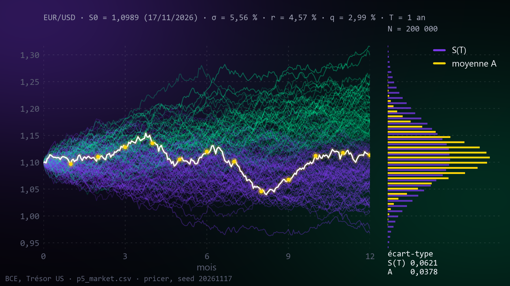
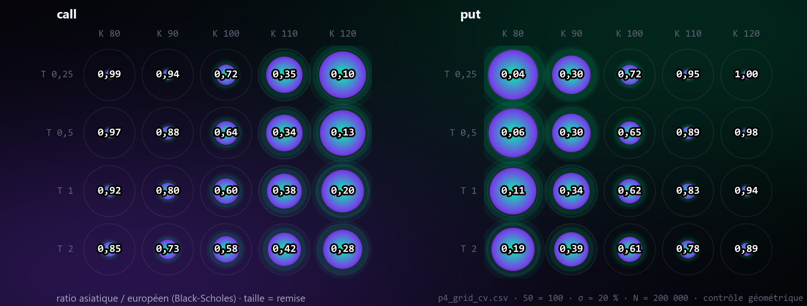
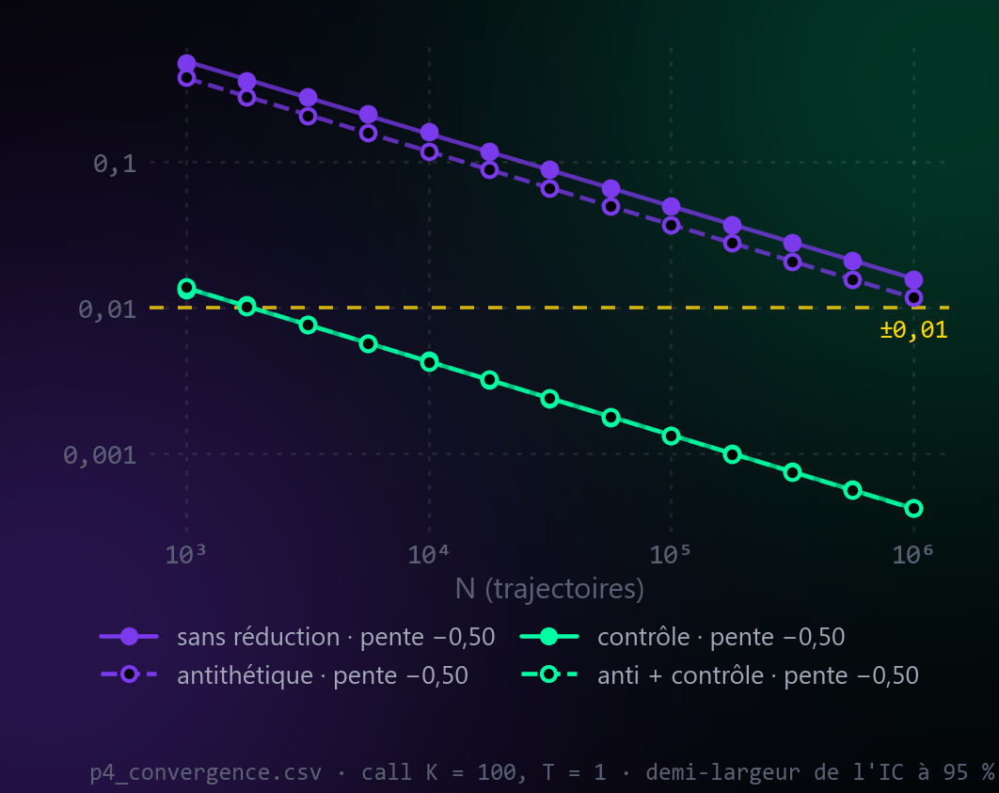
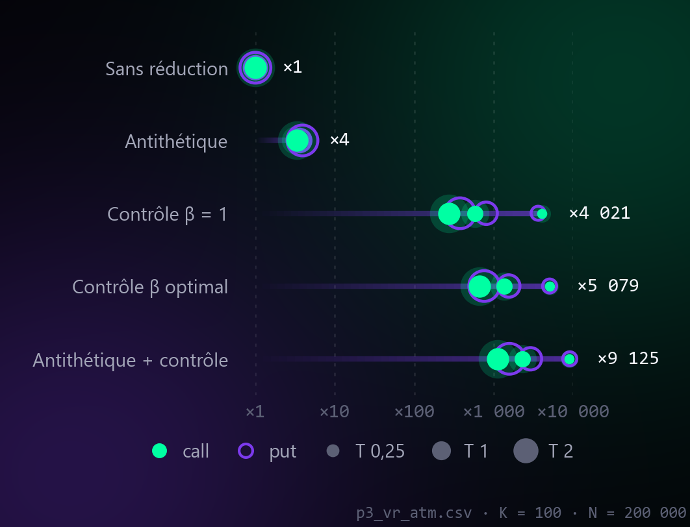

Call et put sur moyenne arithmétique sous Black-Scholes avec dividende continu. Comparaison aux options européennes, réduction de variance par une variable de contrôle géométrique, gain de temps et de précision, application au change EUR/USD.
A. W. Sanoussi ManiCours Pricing Monte-Carlo
{{date_rendu}}
Sous Black-Scholes, dS/S = (r − q) dt + σ dW, nous évaluons le call et le put asiatiques de gain max(±(A − K), 0), où A est la moyenne arithmétique des cours relevés à n dates. Le pricer est une fonction price_asian(S0, K, σ, r, T, q, fréquence d'observation). L'aléa vient exclusivement des méthodes du cours : un générateur congruentiel linéaire (Park-Miller) fournit les uniformes, transformées en normales par la transformée inverse. Box-Muller, la méthode polaire et l'acceptation-rejet ({{p1_rejet_unif}} uniformes par normale) sont aussi codées et donnent le même prix : au plus {{rng_ecart_max}} écart-type d'écart à la référence. Les trajectoires suivent le schéma exact du mouvement brownien géométrique, sur les seules dates d'observation. Chaque prix est rendu avec son écart-type et son intervalle de confiance à 95 %. Validation : sur {{p2_n}} cas, le prix européen simulé par le même moteur contient la formule de Black-Scholes dans son intervalle de confiance {{p2_n_dans_ic}} fois sur {{p2_n}} (écart maximal : {{p2_ecart_max}} écart-type). Sur les exercices du cours (slides 77 et 78), la référence est dans notre intervalle à 99 % dans {{ex_couv_n}} cas sur {{ex_couv_total}}.


L'option asiatique vaut moins que l'européenne de mêmes caractéristiques dans {{grid_n_sous}} cas sur {{grid_n}}. À la monnaie et à un an, le call asiatique vaut {{grid_call_T1_prix}} contre {{grid_call_T1_bs}} pour l'européen, soit un ratio de {{ratio_call_K100_T1_4}} ; le put, {{grid_put_T1_prix}} contre {{grid_put_T1_bs}} ({{ratio_put_K100_T1_4}}). La moyenne est moins dispersée que le cours final (fig. 1) : moins d'incertitude, donc moins de valeur. La décote grandit avec la maturité (ratio du call de {{ratio_call_K100_T025}} à 3 mois à {{ratio_call_K100_T2}} à 2 ans) et surtout hors de la monnaie ({{ratio_call_K120_T1}} pour K = 120, contre {{ratio_call_K80_T1}} pour K = 80) : il faut que la moyenne, et non le seul cours final, franchisse le strike. Une exception : le put K = 120 à 3 mois ({{ratio_put_K120_T025_4}}), très dans la monnaie alors que r > q, cas où la moyenne est en espérance sous le cours final.
L'option sur moyenne géométrique a un prix fermé (la moyenne géométrique est log-normale) et son gain X est très corrélé au gain arithmétique Y : ρ = {{vr_call_T1_ctrl_corr}} (call, 1 an). Nous estimons le prix par la moyenne de Y − β(X − E[X]), avec β = Cov(X, Y)/Var(X) estimé sur l'échantillon. La variance est divisée par 1/(1 − ρ²) = {{vr_call_T1_ctrl_ratio}}, et par {{vr_ctrl_ratio_min}} à {{vr_ctrl_ratio_max}} selon la maturité ; fixer β = 1 fait {{vr_opt_sur_un_min}} à {{vr_opt_sur_un_max}} fois moins bien. Les variables antithétiques (Z, −Z) seules divisent la variance par {{vr_anti_ratio_min}} à {{vr_anti_ratio_max}}. Ajoutées au contrôle, elles ne la réduisent plus à N égal ({{vr_call_T1_antictrl_ratio}} contre {{vr_call_T1_ctrl_ratio}}) : le résidu du contrôle est presque le même pour Z et pour −Z. Elles divisent en revanche par deux le nombre de normales à tirer. Le biais dû à l'estimation de β (hors cours) n'est pas détecté : {{biais_optimal_sd}} écart-type sur {{biais_runs}} répétitions de {{biais_N}} trajectoires.
| Estimateur · T = 1, K = {{th_K}} | Call | Écart-type | ± IC 95 % | Put | Écart-type | ± IC 95 % | Variance ÷ | Efficacité, environ |
|---|---|---|---|---|---|---|---|---|
| Sans réduction | {{vr_call_T1_sans_prix}} | {{vr_call_T1_sans_se}} | {{vr_call_T1_sans_demi}} | {{vr_put_T1_sans_prix}} | {{vr_put_T1_sans_se}} | {{vr_put_T1_sans_demi}} | {{vr_call_T1_sans_ratio}} | ×1 |
| Antithétique | {{vr_call_T1_anti_prix}} | {{vr_call_T1_anti_se}} | {{vr_call_T1_anti_demi}} | {{vr_put_T1_anti_prix}} | {{vr_put_T1_anti_se}} | {{vr_put_T1_anti_demi}} | {{vr_call_T1_anti_ratio}} | ×{{vr_call_T1_anti_gain_env}} |
| Contrôle, β = 1 | {{vr_call_T1_ctrl1_prix}} | {{vr_call_T1_ctrl1_se}} | {{vr_call_T1_ctrl1_demi}} | {{vr_put_T1_ctrl1_prix}} | {{vr_put_T1_ctrl1_se}} | {{vr_put_T1_ctrl1_demi}} | {{vr_call_T1_ctrl1_ratio}} | ×{{vr_call_T1_ctrl1_gain_env}} |
| Contrôle, β optimal | {{vr_call_T1_ctrl_prix}} | {{vr_call_T1_ctrl_se}} | {{vr_call_T1_ctrl_demi}} | {{vr_put_T1_ctrl_prix}} | {{vr_put_T1_ctrl_se}} | {{vr_put_T1_ctrl_demi}} | {{vr_call_T1_ctrl_ratio}} | ×{{vr_call_T1_ctrl_gain_env}} |
| Antithétique + contrôle | {{vr_call_T1_antictrl_prix}} | {{vr_call_T1_antictrl_se}} | {{vr_call_T1_antictrl_demi}} | {{vr_put_T1_antictrl_prix}} | {{vr_put_T1_antictrl_se}} | {{vr_put_T1_antictrl_demi}} | {{vr_call_T1_antictrl_ratio}} | ×{{vr_call_T1_antictrl_gain_env}} |


La marge d'erreur décroît comme 1/√N pour les quatre estimateurs : les pentes mesurées vont de {{pente_sans}} à {{pente_antictrl}} (fig. 3). La réduction de variance abaisse la droite sans en changer la pente. Pour une marge de ±{{eps_01}}, il faut {{nreq_sans_eps01}} trajectoires sans réduction et {{nreq_ctrl_eps01}} avec le contrôle. En efficacité (variance × temps), le gain est d'environ ×{{vr_call_T1_ctrl_gain_env}} pour le contrôle et ×{{vr_call_T1_antictrl_gain_env}} avec les antithétiques ; nous le donnons à l'ordre de grandeur, un même gain ayant varié de {{disp_min}} à {{disp_max}} entre deux mesures du temps. À temps égal ({{teq_b8}} s), la marge est de {{teq_8_sans_demi}} sans réduction et environ {{teq_8_sans_sur_antictrl}} fois plus petite avec contrôle et antithétiques.
Un exportateur français encaisse des dollars chaque mois pendant un an : son risque porte sur le cours moyen, d'où un call asiatique sur EUR/USD ({{fx_nobs}} observations mensuelles, K = S0 ; fig. 1). Même modèle, avec r le taux dollar et q le taux euro. Calibration du {{fx_S0_date}} : S0 = {{fx_S0}} (fixing BCE), σ = {{fx_sigma_pct}} (historique, 252 fixings), r = {{fx_r_pct}} (Trésor américain 1 an), q = {{fx_q_pct}} (courbe BCE AAA 1 an). Le call asiatique coûte {{fx_spot_call_pct}} du cours, contre {{fx_spot_call_bs_pct}} pour l'européen ; pour {{fx_usd_mois}} USD par mois, la prime est d'environ {{fx_spot_prime_eur}} EUR. Faute de volatilité implicite, nous donnons le prix pour σ de {{sens_sigma_min}} à {{sens_sigma_max}} : {{sens_4_spot_call_pct}} à {{sens_8_spot_call_pct}} du cours. Limites : volatilité et taux constants, pas de sourire de volatilité.
| USD pour 1 EUR | Strike K | Asiatique | Écart-type | ± IC 95 % | Européen (formule) | Ratio | Variance ÷ |
|---|---|---|---|---|---|---|---|
| K = S0 · call | {{fx_spot_K}} | {{fx_spot_call_prix}} | {{fx_spot_call_se}} | {{fx_spot_call_demi}} | {{fx_spot_call_bs}} | {{fx_spot_call_ratio}} | {{fx_spot_call_ratiovar}} |
| K = S0 · put | {{fx_spot_K}} | {{fx_spot_put_prix}} | {{fx_spot_put_se}} | {{fx_spot_put_demi}} | {{fx_spot_put_bs}} | {{fx_spot_put_ratio}} | {{fx_spot_put_ratiovar}} |
| K = forward 1 an · call | {{fx_fwd_K}} | {{fx_fwd_call_prix}} | {{fx_fwd_call_se}} | {{fx_fwd_call_demi}} | {{fx_fwd_call_bs}} | {{fx_fwd_call_ratio}} | {{fx_fwd_call_ratiovar}} |
| K = forward 1 an · put | {{fx_fwd_K}} | {{fx_fwd_put_prix}} | {{fx_fwd_put_se}} | {{fx_fwd_put_demi}} | {{fx_fwd_put_bs}} | {{fx_fwd_put_ratio}} | {{fx_fwd_put_ratiovar}} |